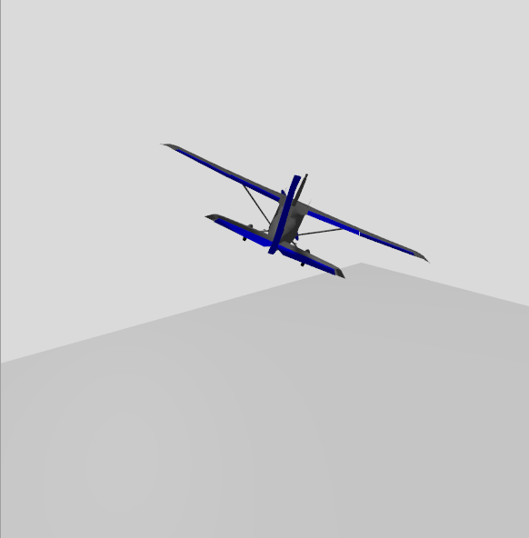
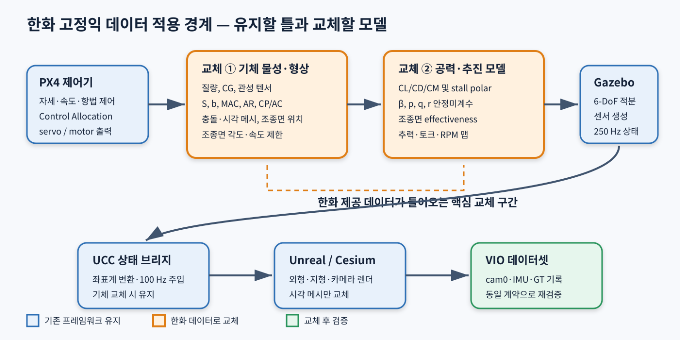
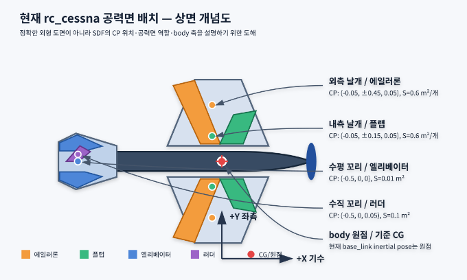

rc_cessna_ucc 현행 모델 분석 및 한화 고정익 데이터 교체 지침| 항목 | 내용 |
|---|---|
| 문서 목적 | 현행 고정익 모델의 물리·공력·추진·조종 계통 설명과 한화 제공 데이터 적용 경계 정의 |
| 기준 모델 | PX4 Gazebo rc_cessna, UCC wrapper rc_cessna_ucc |
| 기준 소프트웨어 | PX4 commit d6f12ad1c4f7, PX4 Gazebo models b6127f4ec20d, Gazebo Sim 8.14.0 |
| 작성일 | 2026-07-21 |
| 상태 | 현행 모델 분석 완료 / 한화 실기체 데이터 수신 전 기준본 |
| 보안 주의 | 본 문서에는 현재 한화 고유 제원이나 비공개 공력 데이터가 포함되어 있지 않음 |

핵심 결론
PX4 제어기, Gazebo 6-DoF 적분, UCC 상태 브리지, Unreal/Cesium 렌더링, VIO 데이터 기록이라는 큰 틀은 그대로 재사용할 수 있다. 한화 데이터가 들어오면 기체 물성·형상, 공력계수, 조종면 효과, 추진계 맵과 PX4 airframe 파라미터를 교체한다. 현재rc_cessna수치는 정밀 공력 검증용이 아니라 통합 비행용 튜닝 모델에 가깝다.
이 문서는 다음 질문에 답하기 위한 기준 문서다.
고정익 시뮬레이션의 데이터 흐름과 소프트웨어 구조는 대부분 공통으로 재사용할 수 있다. 다만 다음 항목은 기체별 차이가 크므로 “고정익은 유사하다”는 이유로 현재 값을 그대로 사용하면 안 된다.
본 문서는 한화 기체 데이터가 도착하기 전의 교체 명세서 겸 현행 모델 감사 기록으로 사용한다.

/ucc/fixed_wing/kinematics 상태 계약cam0, IMU, Ground Truth 데이터셋 형식과 검증기model.sdf의 질량, CG, 관성, collision과 링크 배치실행 스크립트는 다음 값을 사용한다.
PX4_SYS_AUTOSTART=4003
PX4_SIM_MODEL=gz_rc_cessna_ucc
PX4_GZ_MODELS=tools/fixedwing/ucc_fixedwing_mvp_v1/gz_models
rc_cessna_ucc는 새로운 공력 모델이 아니다. 다음과 같이 PX4 기본
rc_cessna를 merge include하고 UCC 상태 발행기만 추가한다.
<model name="rc_cessna_ucc">
<include merge="true">
<uri>rc_cessna</uri>
</include>
<plugin filename="libUccKinematicsPublisher.so"
name="ucc::sim::systems::KinematicsPublisher">
<link_name>base_link</link_name>
<topic>/ucc/fixed_wing/kinematics</topic>
<publish_rate_hz>250</publish_rate_hz>
</plugin>
</model>
따라서 실제 질량·관성·공력·추진 정의는 다음 PX4 Gazebo model 파일에 있다.
/home/boss/PX4-Autopilot/Tools/simulation/gz/models/rc_cessna/model.sdf
UCC KinematicsPublisher는 위치·자세·속도·가속도를 읽어 전송할 뿐 힘이나
모멘트를 생성하지 않는다.
현재 모델은 실물 탑승형 Cessna가 아니라 약 1 m span을 가진 소형 RC Cessna 형상 고정익이다.
+X : 기수/전방
+Y : 좌측
+Z : 상방
이는 Gazebo ENU/FLU 계열이다. PX4 내부의 body FRD와 AirSim NED/FRD로 전달할
때는 기존 브리지에서 축과 quaternion을 변환한다. 한화 모델을 만들 때도 Gazebo
기체 메시와 공력 플러그인 기준축은 반드시 +X forward, +Y left, +Z up으로
통일한다.
| 링크 | 질량 |
|---|---|
base_link |
1.500 kg |
| airspeed 링크 | 0.015 kg |
| 프로펠러 링크 | 0.005 kg |
| 좌·우·전륜 | 0.150 kg |
| 조종면 링크 합계 | 약 0 kg에 가까운 수치 |
| 총질량 | 약 1.670 kg |
base_link의 관성은 다음과 같다.
| 항목 | 값 (kg·m²) |
|---|---|
Ixx |
0.1975630 |
Iyy |
0.1458929 |
Izz |
0.1477000 |
Ixy, Ixz, Iyz |
0 |
현재 inertial pose는 body 원점이며 별도 CG offset이 없다. 한화 데이터가 CG 위치와 관성 기준점을 제공하면 inertial pose 및 평행축 정리 적용 여부를 함께 확인해야 한다.
0.65 × 0.08 × 0.10 m, X offset -0.14 m0.10 × 1.00 × 0.01 m, Z offset +0.07 m0.03 m, width 0.01 m0.025 m, width 0.01 m0.005 × 0.22 × 0.02 m공력 면적과 collision 면적은 서로 독립이다. 현재 collision 주익 평면 면적은
약 0.1 m²지만 공력 플러그인에 입력된 주익 계열 유효 면적 합은 2.4 m²다.
따라서 현행 공력 면적은 형상에서 계산한 물리 면적이라기보다 비행 동작을 위한
튜닝값으로 봐야 한다.
| 항목 | 현행 값 |
|---|---|
| Physics engine | Gazebo ODE |
| 적분 step | 0.004 s |
| update rate | 250 Hz |
| 중력 | 0 0 -9.8 m/s² |
| 대기 | adiabatic atmosphere 선언 |
| LiftDrag 공기 밀도 | 1.2041 kg/m³ 고정 |
| 바람 | 현재 없음 |
대기가 선언되어 있어도 현행 LiftDrag는 각 플러그인의 고정 air_density를
사용한다. 한화 요구사항에 고도별 성능이 포함되면 밀도 모델을 별도로 처리해야
한다.
현행 모델은 Gazebo Sim 8.14의 기본 LiftDrag 시스템 6개를 base_link에
부착한다. 이것은 CFD, panel method 또는 blade element 해석이 아니라 각
공력면을 선형 계수와 piecewise stall 곡선으로 표현하는 저차 모델이다.

각 공력면의 CP에서 다음 상대속도를 계산한다.
Vcp = Vcg + omega × rcp - Vwind
그 뒤 공력면의 forward, upward로 정의된 lift-drag plane에 속도를 투영해
받음각 alpha와 sweep 성분을 구한다. 속도가 전방 벡터의 반대 방향이면 힘을
생성하지 않는다.
q = 0.5 × rho × Vplane²
현행 모든 공력면은 rho = 1.2041 kg/m³를 사용한다.
stall 전 기본식은 다음과 같다.
CL = CLa × alpha × cos²(sweep)
CL = CL + control_joint_rad_to_cl × delta
Lift = CL × q × S
a0는 계산 받음각에 더해지는 초기 받음각 offset 역할을 한다. delta는 연결된
Gazebo 조인트의 실제 회전각이다.
stall 이후에는 alpha_stall, CLa_stall을 사용하는 piecewise 직선으로
전환하고, 양의 받음각에서 CL ≥ 0, 음의 받음각에서 CL ≤ 0으로 제한한다.
stall 전 기본식은 다음과 같다.
CD = abs(CDa × alpha × cos²(sweep))
Drag = CD × q × S
현재 플러그인은 CD0 + kCL² 형태의 parasite/induced drag를 사용하지 않는다.
조종면 각도 역시 현행 구현에서는 CD를 바꾸지 않는다.
CM = CMa × alpha + CMdelta × delta
Moment = CM × q × S
Total torque = Moment + rcp × (Lift + Drag)
현행 SDF는 모든 공력면의 CMa=0, CMdelta=0이므로 직접 공력 모멘트는 0이다.
실제 회전 모멘트 대부분은 CP offset에서 힘을 적용한 rcp × F로 만들어진다.
계산식 기준은 Gazebo Sim 8.14.0의 다음 소스다.
https://github.com/gazebosim/gz-sim/blob/
gz-sim8_8.14.0/src/systems/lift_drag/LiftDrag.cc
공통값:
CLa = 4.752798721 /rad
alpha_stall = 0.3391428111 rad = 19.43 deg
CLa_stall = -3.85 /rad
CDa_stall = -0.9233984055 /rad
CMa = 0
CMa_stall = 0
rho = 1.2041 kg/m³
forward = (1, 0, 0)
| 공력면 | CP (m) | S (m²) | a0 (rad) |
CDa |
조종 gain dCL/dδ |
|---|---|---|---|---|---|
| 좌 에일러론/외측 날개 | (-0.05,+0.45,+0.05) |
0.6 | 0.0598428 | 1.5 | -0.3 |
| 우 에일러론/외측 날개 | (-0.05,-0.45,+0.05) |
0.6 | 0.0598428 | 1.5 | -0.3 |
| 좌 플랩/내측 날개 | (-0.05,+0.15,+0.05) |
0.6 | 0.0598428 | 0.6417112 | -0.1 |
| 우 플랩/내측 날개 | (-0.05,-0.15,+0.05) |
0.6 | 0.0598428 | 0.6417112 | -0.1 |
| 엘리베이터/수평 꼬리 | (-0.50,0,0) |
0.01 | -0.2 | 0.6417112 | -4.0 |
| 러더/수직 꼬리 | (-0.50,0,+0.05) |
0.1 | 0 | 0.6417112 | +0.8 |
러더만 upward=(0,1,0)을 사용해 횡방향 힘을 만든다. 나머지는
upward=(0,0,1)이다.
body 받음각 0도, 조종면 0도, V=15 m/s라는 단순 조건에서 외측/내측 날개
4개만 계산하면 다음 수준이다.
| 항목 | 계산값 |
|---|---|
| 동압 | 135.46 Pa |
각 날개 요소의 CL |
약 0.2844 |
| 날개 4개 총양력 | 약 92.5 N |
| 날개 4개 총항력 | 약 20.8 N |
| 1.67 kg 기체 중량 | 약 16.4 N |
실제 비행에서는 기체가 음의 trim 받음각을 가져 양력이 줄어든 상태에서 균형을 잡는다. 이 계산은 현행 면적·계수가 실제 RC 기체의 기하 기반 값이 아니라는 점을 보여주는 참고치이며, 실제 비행 상태의 힘을 그대로 의미하지 않는다.
프로펠러는 Gazebo MulticopterMotorModel을 fixed-wing puller로 재사용한다.
| 항목 | 현행 값 |
|---|---|
| 위치 | body X=+0.22 m |
| 회전 방향 | CW |
| 상승 time constant | 0.0125 s |
| 하강 time constant | 0.025 s |
| 최대 회전속도 | 1000 rad/s |
| motor constant | 1.2e-5 |
| moment constant | 0.016 |
| rotor drag coefficient | 8.06428e-5 |
| rolling moment coefficient | 1e-6 |
이 모델은 실제 프로펠러 직경·피치, advance ratio, 비행속도별 효율 곡선과 모터/ESC 전기 특성을 직접 반영하지 않는다. 한화 제공 데이터에 thrust bench 결과 또는 RPM/airspeed별 추력·토크 맵이 있으면 해당 맵을 우선 적용한다.
PX4 airframe 4003_gz_rc_cessna는 control surface 6개와 motor 1개를 설정한다.
| PX4 surface | Type | Gazebo 출력 | SDF 대상 |
|---|---|---|---|
| CS0 | Left Aileron | servo_0 |
servo_0 joint |
| CS1 | Right Aileron | servo_1 |
servo_1 joint |
| CS2 | Elevator | servo_2 |
servo_2 joint |
| CS3 | Rudder | servo_3 |
rudder_joint |
| CS4 | Left Flap | servo_4 |
left_flap_joint 의도 |
| CS5 | Right Flap | servo_5 |
right_flap_joint 의도 |
| Motor 0 | Motor 1 | command/motor_speed |
rotor_puller_joint |
Gazebo servo 인터페이스는 PX4 normalized/PWM 출력을 기본 -45~+45 deg 범위로
선형 변환해 각 servo_n 토픽으로 발행한다. SDF 조인트 제한은 약
-0.78~+0.78 rad다.
현행 SDF에는 에일러론, 엘리베이터, 러더의 JointPositionController만 있고
left_flap_joint, right_flap_joint 컨트롤러가 없다. 런타임 토픽 확인 결과도
다음과 같다.
servo_0~3: publisher와 subscriber 존재servo_4~5: PX4 publisher만 존재, Gazebo subscriber 없음따라서 현행 플랩 명령은 조인트와 공력계수에 적용되지 않는다. 한화 기체 모델을 작성할 때는 각 control surface 출력마다 다음 세 연결이 모두 존재해야 한다.
PX4 actuator function
-> /model/<name>/servo_N topic
-> JointPositionController
-> control_joint_name을 참조하는 공력 모델
2.4 m²와 collision 평면 면적 약 0.1 m²의 큰 차이CD0, induced drag, Reynolds/Mach 영향 없음CMa, CMq, 조종면에 의한 직접 moment가 없음CYβ, Clβ, Cnβ 안정미계수 없음p, q, r rate derivative 없음CL만 바꾸고 CD, CM에는 직접 반영되지 않음CDa_stall로 인해 일부 큰 받음각에서 항력 곡선이
비물리적으로 감소하거나 0 부근을 통과할 수 있음PX4의 upstream rc_cessna 파일을 직접 수정하지 않는다. 다음 독립 모델을 만든다.
tools/fixedwing/ucc_fixedwing_mvp_v1/gz_models/
hanwha_fixedwing/
model.config
model.sdf
meshes/
이렇게 하면 기준 모델과 한화 모델을 같은 실행 구조에서 선택적으로 비교할 수 있고, PX4 submodule 업데이트에도 영향을 덜 받는다.
LiftDrag 유지한화가 제한된 기본 제원과 CL-alpha, CD-alpha, stall 정보만 제공할 때 사용한다.
AdvancedLiftDrag 전환 권장한화가 풍동/CFD/AVL/XFLR/OpenVSP 또는 비행시험 기반 안정미계수를 제공할 때 사용한다.
주요 입력 예:
S, AR, MAC
CL0, CLa, CLq
CD0, induced-drag efficiency
Cm0, Cma, Cmq
CYb, Clb, Cnb
CYp/CLp/Clp/Cnp
CYr/CLr/Clr/Cnr
각 조종면의 dCL, dCD, dCY, dCl, dCm, dCn
현재 시스템에는 Gazebo AdvancedLiftDrag 플러그인과 예제 파일이 설치되어 있다.
한화 데이터가 충분하면 단순 공력면 6개를 유지하는 것보다 단일 6-DoF
stability derivative 모델로 전환하는 편이 물리적으로 일관된다.
S, span b, MAC c_bar, aspect ratio ARIxx, Iyy, Izz, Ixy, Ixz, IyzCL-alpha, CD-alpha, Cm-alpha 표 또는 계수CL0, CLa, CLmax, alpha_stallCD0, drag polar의 k 또는 Oswald efficiencyCm0, Cma, CmqdCL/dδe, dCD/dδe, dCm/dδeCYβ, Clβ, CnβCYp, Clp, CnpCYr, Clr, CnrCT, CQ, J 곡선 또는 시험 데이터| 한화 제공 항목 | 단순 LiftDrag | AdvancedLiftDrag / 기타 | 적용 위치 |
|---|---|---|---|
| 총질량 | 동일 | 동일 | <inertial><mass> |
| CG | CP의 기준 변경 포함 | 동일 | inertial pose / 링크 원점 |
| 관성 텐서 | 동일 | 동일 | <inertia> |
S |
공력면별 area 분배 |
모델 기준 area |
aerodynamic plugin |
b, MAC, AR |
CP/면적에 간접 반영 | AR, mac 직접 입력 |
AdvancedLiftDrag |
CL0, CLa |
a0, cla로 근사 |
직접 입력 | aerodynamic plugin |
CD0, drag polar |
기본 LiftDrag로 불충분 | CD0, eff 등 |
AdvancedLiftDrag 권장 |
Cm0, Cma, Cmq |
cma, cm_delta 일부 |
직접 입력 | AdvancedLiftDrag 권장 |
β, p, q, r 미계수 |
표현 제한 | 직접 입력 | AdvancedLiftDrag 권장 |
| stall polar | alpha_stall, stall slope |
stall 계수/테이블 | aerodynamic plugin |
| 조종면 미계수 | control_joint_rad_to_cl |
surface별 6축 derivative | control surface block |
| 변위/속도 제한 | joint limit/controller | 동일 | SDF joint/controller |
| 추력·토크 맵 | motor constant 근사 | custom map/plugin | propulsion plugin |
| 외형 메시 | 동일 | 동일 | Gazebo/Unreal mesh |
새 hanwha_fixedwing/model.sdf에 다음을 구현한다.
base_link 질량·CG·관성JointPositionControllerKinematicsPublisher 250 Hz4003_gz_rc_cessna를 직접 덮어쓰지 않고 한화 전용 autostart ID를 추가한다.
동역학이 바뀌면 기존 PX4 gain을 그대로 확정값으로 간주해서는 안 된다. 우선 보수적인 값으로 비행 가능성을 확보한 뒤 SIL에서 재튜닝한다.
다음 선택 항목만 바꾸고 실행 순서와 브리지 구조는 유지한다.
PX4_SYS_AUTOSTART=<한화 전용 ID>
PX4_SIM_MODEL=gz_hanwha_fixedwing
PX4_GZ_MODELS=<한화 모델 root>
+X가 기수인지 확인기체명이 바뀌더라도 UCC 브리지로 전달되는 상태 벡터 계약은 유지한다.
position, orientation quaternion
linear/angular velocity
linear/angular acceleration
source timestamp
alpha sweep으로 CL/CD/CM 곡선 비교beta sweep으로 CY/Cl/Cn 비교q ∝ V² 응답 확인cam0 640×480, 10 Hz한화가 공식 오차 기준을 제공하기 전 사용할 잠정 기준이다. 공식 기준이 도착하면 그 값으로 대체한다.
| 항목 | 잠정 기준 |
|---|---|
| 질량/CG/관성 | 제공 데이터와 단위·기준점까지 정확히 일치 |
| 공력 force/moment curve | 제공 표 또는 해석 결과 대비 주요 운용 구간 ±5% 이내 |
| trim 속도/자세/추력 | 기준점 대비 ±5% 이내 또는 합의 범위 |
| stall 속도 | 기준값 대비 ±5% 이내 |
| 조종면 부호·권한 | 모든 축 방향 일치, saturation 원인 설명 가능 |
| 추진 추력/토크 | 제공 map 대비 주요 운용 구간 ±5% 이내 |
| 비정상 토픽 | 누락 publisher/subscriber 0 |
| 물리 오류 | NaN/Inf, 폭주, timestamp 역행 0 |
| VIO 파이프라인 | 기존 fixed-wing MVP 계약 전체 통과 |
| 역할 | 파일 |
|---|---|
| 현행 실행 스크립트 | tools/fixedwing/ucc_fixedwing_mvp_v1/08_run_gz_rc_cessna_ucc.sh |
| UCC wrapper model | tools/fixedwing/ucc_fixedwing_mvp_v1/gz_models/rc_cessna_ucc/model.sdf |
| PX4 RC Cessna model | /home/boss/PX4-Autopilot/Tools/simulation/gz/models/rc_cessna/model.sdf |
| PX4 airframe | /home/boss/PX4-Autopilot/ROMFS/px4fmu_common/init.d-posix/airframes/4003_gz_rc_cessna |
| PX4 servo bridge | /home/boss/PX4-Autopilot/src/modules/simulation/gz_bridge/GZMixingInterfaceServo.cpp |
| Gazebo world | /home/boss/PX4-Autopilot/Tools/simulation/gz/worlds/default.sdf |
| AdvancedLiftDrag 예제 | /usr/share/gz/gz-sim8/worlds/advanced_lift_drag_system.sdf |
| UCC 상태 발행기 | tools/fixedwing/ucc_fixedwing_mvp_v1/gz_plugin/UccKinematicsPublisher.cpp |
| Gazebo-UCC 브리지 | tools/fixedwing/ucc_fixedwing_mvp_v1/gazebo_airsim_bridge.py |
| 통합 상태 문서 | docs/FIXEDWING_INTEGRATION_STATUS.md |
rc_cessna를 나란히 실행 가능하게 유지한다.+X nose를 확인한 뒤 보정한다.rc_cessna의 좌·우 플랩 JointPositionController 연결AdvancedLiftDrag 기반 한화 모델 template 준비본 문서는 한화 실기체 데이터가 들어오기 전의 기준본이다. 실제 데이터 적용 시 기체 식별자, 데이터 출처, 계수 버전, 변경 파일, 검증 결과와 승인자를 문서 revision history에 추가한다.